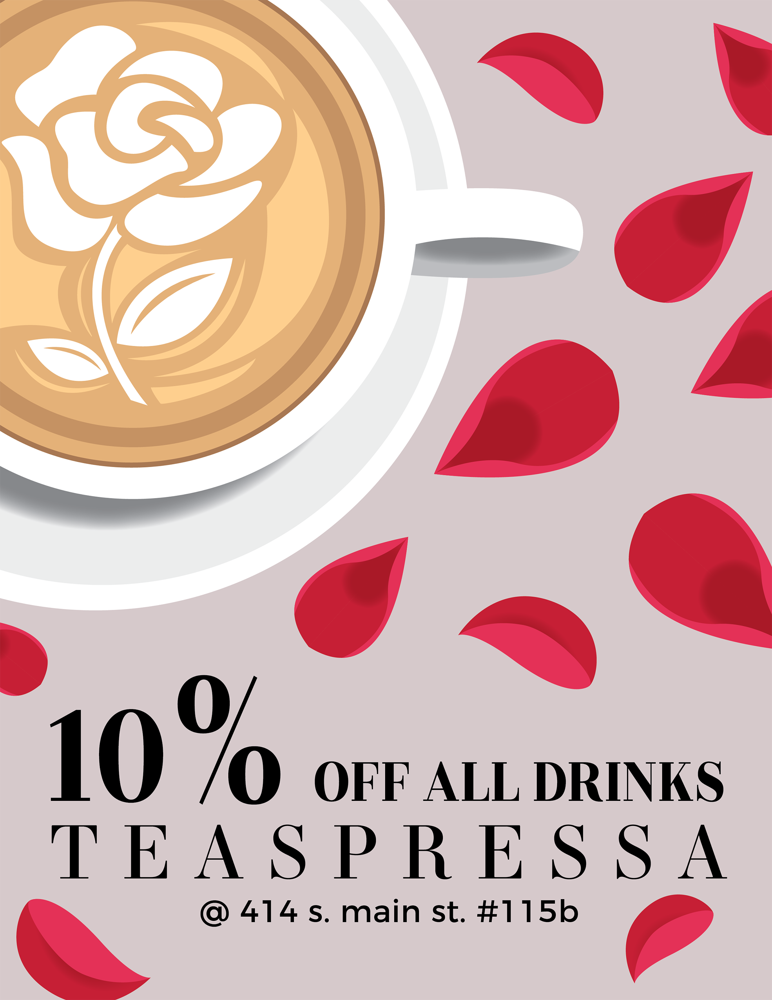

×

As a Creative Design Member of the Michigan Advertising and Marketing Club from September 2017-May 2019, I’ve had the opportunity to design fliers for several organizations and local businesses, including United 2 Heal, Iorio’s Gelateria, and most notably, Teaspressa.
Teaspressa is a coffee-inspired tea shop that began in Arcadia, Arizona. In 2018, Teaspressa expanded and opened a branch in Ann Arbor, Michigan. However, being a little farther from campus than other coffee stores, Teaspressa encountered difficulty with brand awareness, especially amongst college-age young adults.
As the Creative Design member for the Teaspressa client team during Fall 2018, I designed one flier for general use detailing a 10% discount for customers. To gain broader reach within the University of Michigan student population, we also partnered with Wolverine Cuizine, a student-run food publication, to be the location of their 2018-2019 launch party. For that event’s promotion, I designed half-page fliers to distribute around campus and promote the launch of Wolverine Cuizine.
Because the Wolverine Cuizine launch would be at Teaspressa but also feature startup Gonana’s banana bread products, as well as ice cream from a local creamery, I thought it would be pertinent to design the flier after an album cover “featuring” several artists. As such, I based my creation off of Spotify’s highly recognizable UI.
In order to segment to the university student population, the Teaspressa client team pitched Snapchat filters to Teaspressa. Because Teaspressa prides itself on both the quality and aesthetics of their teas, as well as the design of their interior, leveraging Snapchat filters showcases these two integral aspects of their brand at a low cost.
For this project, I designed two mockup Snapchat filters. One was based on the interior design of the store — minimalistic plants and marble tables. The other features a small graphic of the slogan, C'est La Tea, as well as their poster beverage: tea with rose petals.